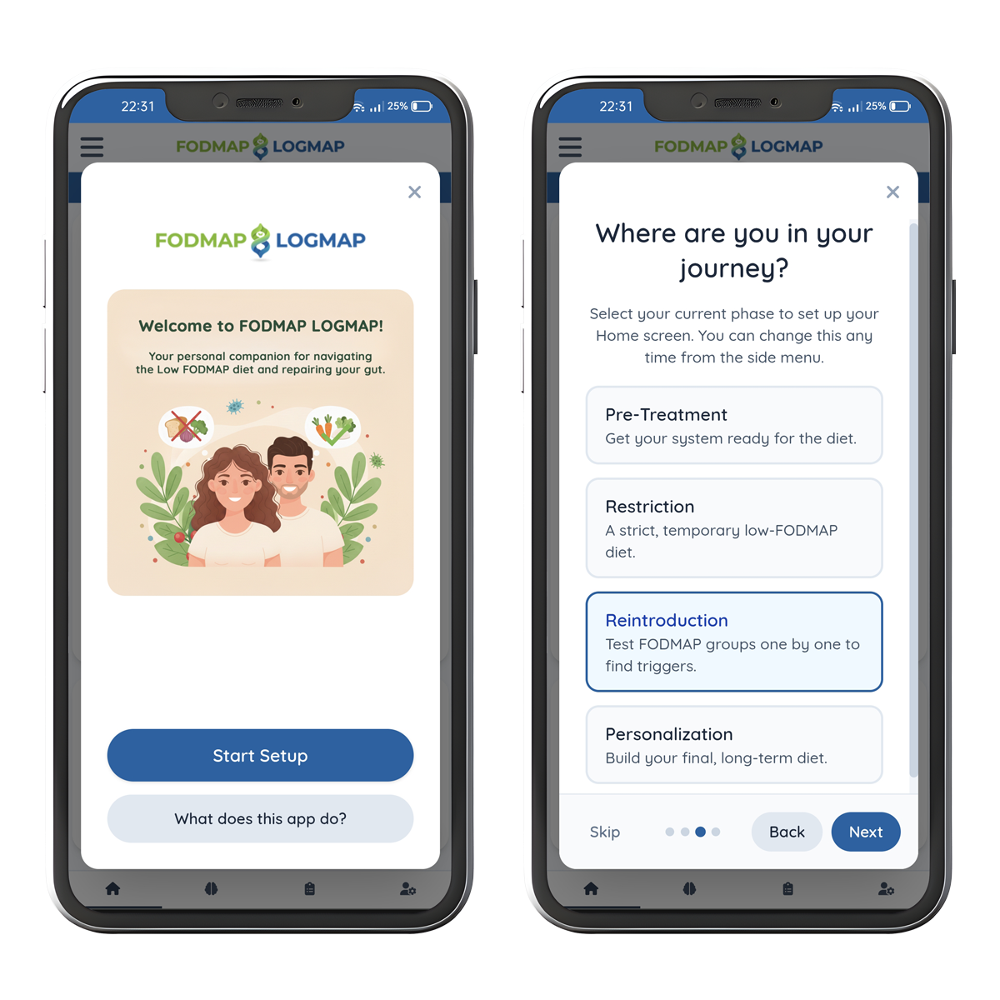
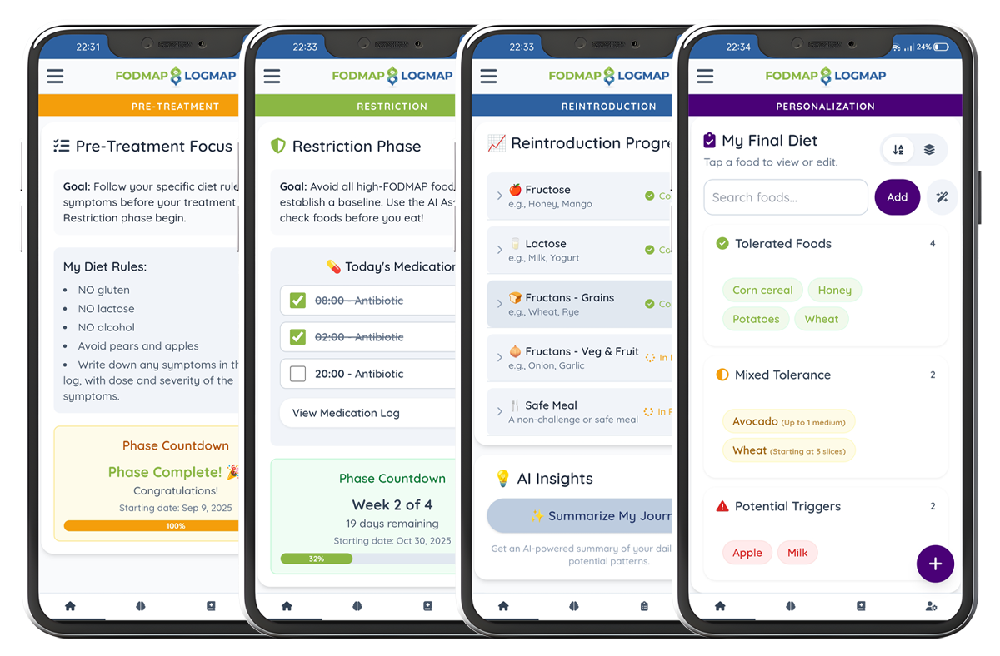
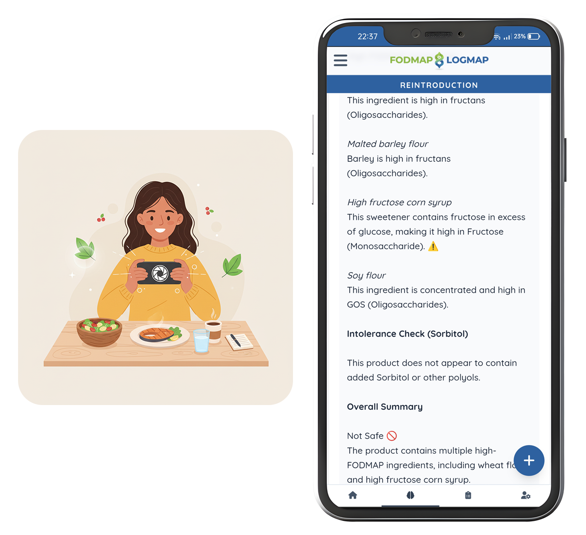
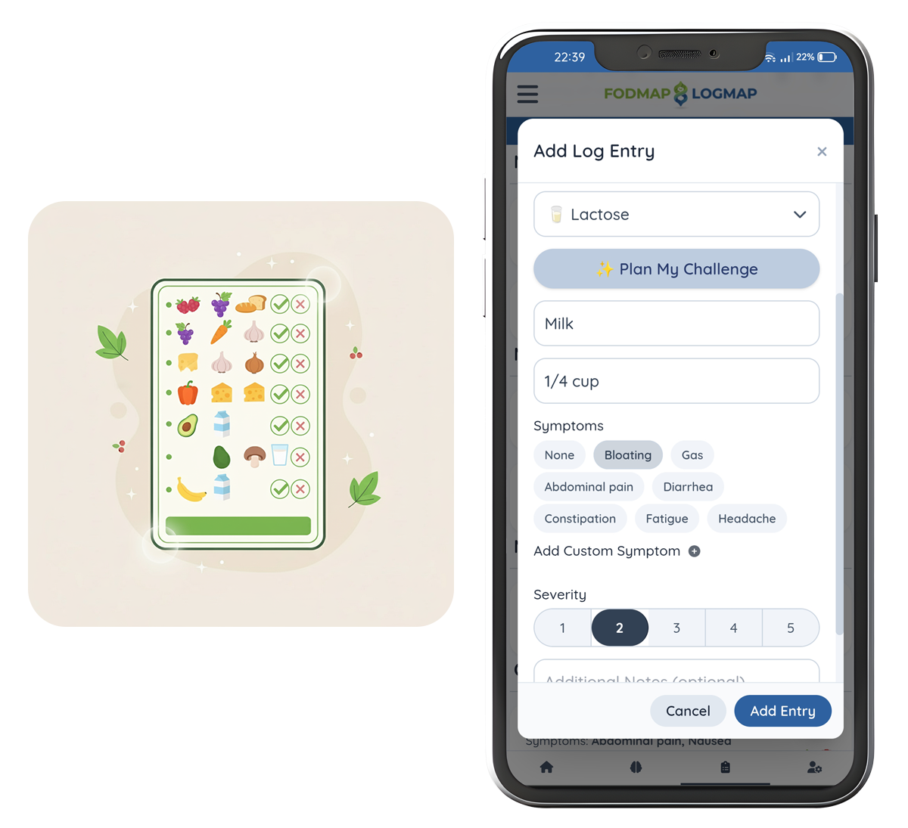
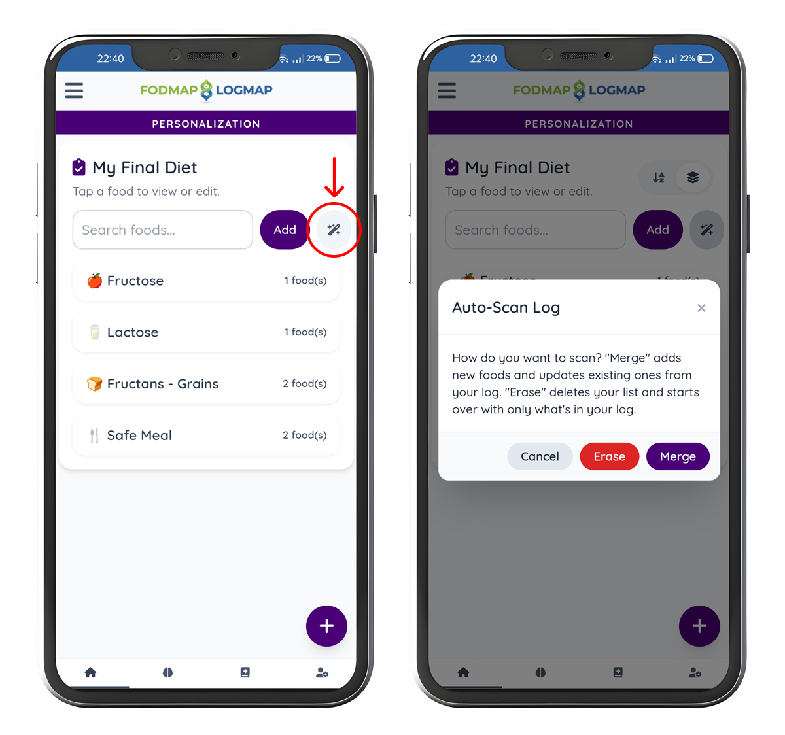
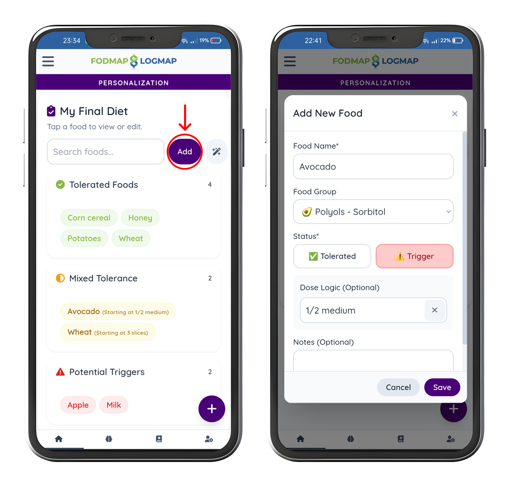

User Guide & FAQ
Find answers, guides, and tips on how to get the most out of FODMAP LOGMAP.
User Guide
Welcome to your personal FODMAP guide! This app is designed to be your partner, adapting to your journey. Let's break down the powerful features you've unlocked.
1. The First Step: The Welcome Setup
When you first open the app, you'll see a Welcome Setup. This is the most important step!
- Slide 1: Get to Know You. We ask for your conditions, intolerances, and preferences. This is used by the AI Assistant to give you safer, personalized advice.
- Slide 2: Choose Your Phase. Select where you are in your journey to set up your app.
- Slide 3: Phase Setup. Set your phase start date, duration, diet rules (for Pre-Treatment), or medication (for Restriction).

2. The Big Idea: Your Adaptive Home Screen
Your Home tab is your dashboard, and it changes based on your active phase.
- Pre-Treatment: You'll see your Diet Rules and a Phase Countdown.
- Restriction: You'll see your Phase Countdown and the Medication Tracker.
- Reintroduction: This is the main hub! You'll see:
- Reintroduction Progress: A list of all your challenge logs, grouped by FODMAP.
- AI Insights: A button to get an AI-powered summary of your journey.
- Symptom Trends: A chart that plots your symptom severity over time.
- Personalization: You'll see My Final Diet, your personal library of "safe" and "trigger" foods.

3. How to Use the AI Assistant 🤖
Go to the AI Assistant tab to get instant answers.
- Check a Single Food: Just type the name of a food (e.g., "Avocado" or "Honey") and hit send. The AI will give you a simple breakdown: FODMAP Level, Safe Portion, and Substitutes, all tailored to your profile.
- Analyze a Photo: This is the killer feature.
- Tap the Plus icon () in the chat bar.
- Choose Camera to snap a photo of an ingredient label or Gallery to upload one.
- The AI will analyze the image, list all ingredients, and warn you about any high-FODMAP items.

4. How to Log (The Smart Way)
Tap the big Plus icon on any screen. This form is also adaptive!
- The FODMAP Selector: In the Reintroduction phase, this dropdown is required. In all other phases, it's hidden or optional.
- Finding Your Food: As you type in the "Food Name" box, the app will show suggestions from your past entries to save time.
- Tracking Symptoms: Tap the predefined symptom tags (e.g., "Bloating") or tap "Add Custom Symptom" to create your own (like "Nausea" or "Brain Fog"). The Severity slider (1-5) will appear when you select a symptom.

5. How to Plan a Reintroduction Challenge ✨
Not sure how to test Fructose? We've got you covered.
- Make sure you are in the Reintroduction phase.
- Open the Log Entry modal.
- Select the group you want to test (e.g., "Fructose").
- A new button will appear: "✨ Plan My Challenge".
- Tap it! The AI will generate a 3-day test plan (e.g., Day 1: 1 tsp Honey...) right in a popup.
6. The End Goal: Building Your "Final Diet" 🗺️
The Personalization phase is where it all comes together. Your goal is to build a list of your personal triggers and safe foods. You have two ways to do this:
A. The Easy Way: Auto-Scan (The "Non-Obvious" Magic)
- First, make sure you've been logging your meals and symptoms for a while.
- Switch to the Personalization phase (from the side menu).
- On the Home screen, tap the Auto-Scan button ().
- The app will read your entire log history and automatically create your food list. It will label foods as "Tolerated" if you never had symptoms, and "Trigger" if you did.

B. The Manual Way: Add & Edit Foods
You can also manage your list manually.
- On the Personalization Home screen, tap "Add" to create a new food entry.
- Tap any food in your list to open the Food Modal.
- This modal lets you set the status (Tolerated or Trigger) and add complex Dose Logic.
- Example: You can mark "Avocado" as a "Trigger," but then add a dose logic of "starting at 1/4" to remind you how much causes a problem.
- Example: You can mark "Sourdough Bread" as "Tolerated," but add a dose logic of "up to 2 slices" to define your safe limit.

7. Managing Your App
- Change Your Phase: Tap the Side Menu and use the Phase Selector. This is the master control for your app experience.
- Backup Your Data: Go to Profile > Data Management and tap Export Data. Do this often!
- Install as an App: If you see an "Install App" button in the Side Menu, tap it to save FODMAP LOGMAP to your phone's home screen.
Frequently Asked Questions (FAQ)
General Questions
What is FODMAP LOGMAP?
FODMAP LOGMAP is your personal companion for navigating the 4-phase Low FODMAP diet. It's an adaptive tool that changes with you, offering a smart log, a powerful AI assistant, and a personalization hub to help you find your "final" long-term diet.
Is this app a replacement for a doctor or dietitian?
No. This app is a powerful tool to support you and your healthcare team. It is designed for informational and tracking purposes only and is not a substitute for professional medical advice, diagnosis, or treatment. Always consult with your doctor or a registered dietitian.
Why does the app look different sometimes?
That's the app's magic! 🪄 The Home screen and Log form automatically adapt to your current phase. The app shows you the tools you need for Pre-Treatment, Restriction, Reintroduction, or Personalization. You can see and change your current phase from the Side Menu.
Logging & Phases
How do I log a "Safe Meal" or a meal that's not a challenge?
During the Reintroduction phase, the log form requires you to pick a FODMAP group you are testing.
During the Pre-Treatment, Restriction, or Personalization phases, you can simply log your food. If you don't select a FODMAP group, the entry is automatically logged as a "Safe Meal."
How do I change my current phase?
Tap the Side Menu icon (top-left corner). Under the "Phase Selector," tap the phase you want to switch to (e.g., "Reintroduction"). The app will instantly update.
What is the Medication Tracker?
This is a special tool that appears on your Home screen during the Restriction phase. It's designed to help you track medications, like a 12-day course of antibiotics, which many people take before starting the diet. You can set it up from the Home screen or ignore it.
Data & Privacy
Where is my data (logs, profile) stored?
All your data is stored only on your device in your browser's local storage. It is never uploaded to a server, and we (the developers) cannot see it.
What happens if I clear my browser cache?
You will lose all your data. 🛑 Because your data is stored locally, clearing your "Site Data" or "Cookies" for this app will delete your logs and profile.
How do I back up my data or move it to a new phone?
This is very important!
- On your old device: Go to the Profile tab > Data Management > Export Data. This saves a backup file.
- Move the file: Send that file to your new device (e.g., via email).
- On your new device: Open the app, go to Profile > Data Management > Import Data, and select the backup file. The app will reload with all your information.